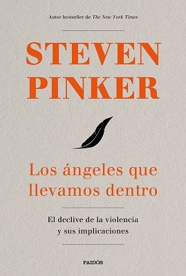
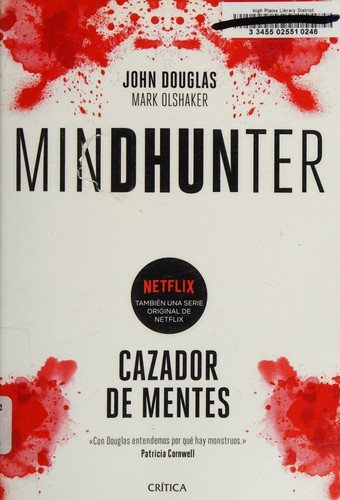

Libros de psicología jurídica y forense
Libros de psicología jurídica y forense en español: 15 libros completos para leer gratis aquí mismo y 3 fichas de títulos actuales.
Sumarios de Psicología. Casos de psicología forenseAlcázar-Córcoles, Miguel Ángel
Sumarios de Psicología. Casos de psicología forenseAlcázar-Córcoles, Miguel ÁngelEn la mente del menor delincuente: casos de psicología forense de menores infractoresAlcázar-Córcoles, Miguel Ángel
En la mente del menor delincuente: casos de psicología forense de menores infractoresAlcázar-Córcoles, Miguel ÁngelEstudio comparativo de la drogodependencia en el medio penitenciario: perfiles psicológicos para orientar el tratamientoPicado Valverde, Eva María
Estudio comparativo de la drogodependencia en el medio penitenciario: perfiles psicológicos para orientar el tratamientoPicado Valverde, Eva MaríaLa memoria de los testigosJavier de la Fuente Arnanz
La memoria de los testigosJavier de la Fuente ArnanzEl perdón, la reconciliación y la justiciaThiebaut, Carlos
El perdón, la reconciliación y la justiciaThiebaut, CarlosLa mediación familiar en un marco transformadorMontoya Sánchez, Miguel Ángel; Puerta Lopera, Isabel del Socorro
La mediación familiar en un marco transformadorMontoya Sánchez, Miguel Ángel; Puerta Lopera, Isabel del SocorroDelincuencia y drogas : estudio de un grupo marginado y respuestas educativasVega Fuente, Amando; de la Garza, Fidel; Giralde, Aurora; Panchón i Iglesias, Carme; Mallor, José Antonio; Bárcena, Manuel
Delincuencia y drogas : estudio de un grupo marginado y respuestas educativasVega Fuente, Amando; de la Garza, Fidel; Giralde, Aurora; Panchón i Iglesias, Carme; Mallor, José Antonio; Bárcena, ManuelRelaciones de la patología mental con los tribunales de justiciaRobert, Bartomeu, 1842-1902
Relaciones de la patología mental con los tribunales de justiciaRobert, Bartomeu, 1842-1902Bases psicosociales en criminología, septiembre 2019Feliu, Joel; Calsamiglia Madurga, Andrea; Cubells Serra, Jenny; Martínez Martínez, Luz M.; Pallí Monguilod, Cristina; Pujal i Llombart, Margot
Bases psicosociales en criminología, septiembre 2019Feliu, Joel; Calsamiglia Madurga, Andrea; Cubells Serra, Jenny; Martínez Martínez, Luz M.; Pallí Monguilod, Cristina; Pujal i Llombart, MargotEfectos psicosociales en las víctimas directas del terrorismo de Estado ante las actuales acciones del Estado argentino de deslegitimación de políticas de memoria, verdad, justicia y reparaciónGiannasi, Aldana
Efectos psicosociales en las víctimas directas del terrorismo de Estado ante las actuales acciones del Estado argentino de deslegitimación de políticas de memoria, verdad, justicia y reparaciónGiannasi, AldanaVictimización secundaria: efectos psicosociales y legales en personas que presentan procesos judiciales prolongadosReyes Valenzuela, Carlos Marcelo; Benavides Llerena, Gina Morela
Victimización secundaria: efectos psicosociales y legales en personas que presentan procesos judiciales prolongadosReyes Valenzuela, Carlos Marcelo; Benavides Llerena, Gina MorelaPsicología jurídica, septiembre 2014Fariña, Francisca; Vilariño Váquez, Manuel; Arce Fernández, Ramón
Psicología jurídica, septiembre 2014Fariña, Francisca; Vilariño Váquez, Manuel; Arce Fernández, RamónPredicción, prevención y tratamiento de la conducta delictiva, septiembre 2013Garrido Genovés, Vicente; González García, Almudena
Predicción, prevención y tratamiento de la conducta delictiva, septiembre 2013Garrido Genovés, Vicente; González García, AlmudenaPsicología jurídicaPuente de Camaño, Olga Josefina
Psicología jurídicaPuente de Camaño, Olga JosefinaLa muchedumbre delincuente : ensayo de psicología colectivaSighele, Scipio
La muchedumbre delincuente : ensayo de psicología colectivaSighele, ScipioLos ángeles que llevamos dentroSteven Pinker
Los ángeles que llevamos dentroSteven Pinker
MindhunterJohn Douglas y Mark Olshaker
MindhunterJohn Douglas y Mark Olshaker
Amores que matanVicente Garrido
Amores que matanVicente GarridoTemas relacionados
¿Estás eligiendo carrera?
Haz gratis el test de orientación vocacional de AURZANE: intereses, aptitudes, autoconcepto y hábitos de estudio, con informe completo.